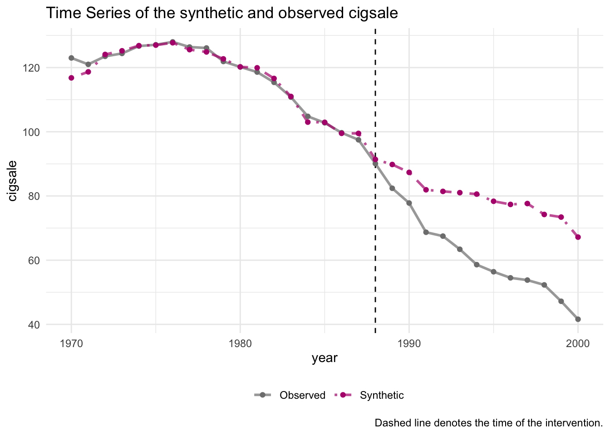
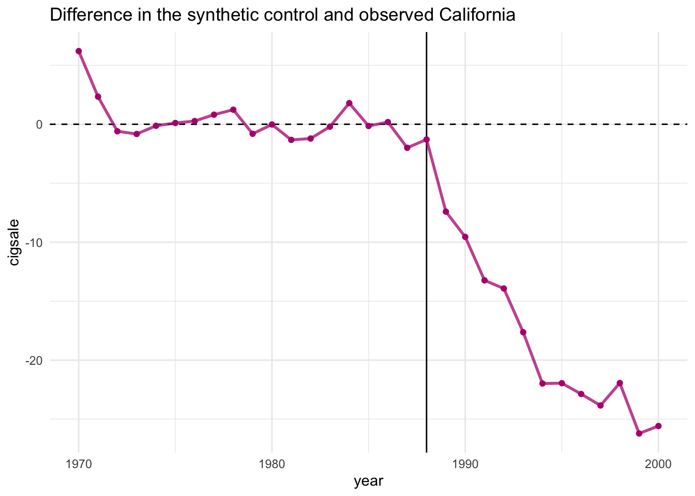
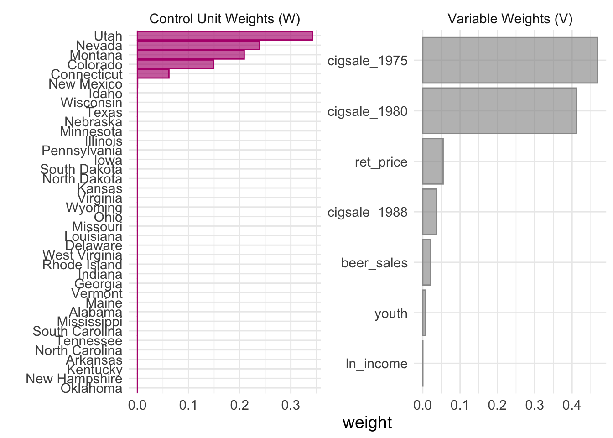

Synthetic control is a powerful method for causal inference when randomized experiments are infeasible and when we have only one treated unit or a small number of treated units. It constructs a credible counterfactual by creating a weighted combination of control units – the synthetic twin – that closely matches the treated unit’s pre-treatment characteristics.
By the end of this tutorial, you will be familiar with:
1. Prepare data for synthetic control analysis using tidysynth
2. Visualize synthetic vs. actual trends
3. Interpret results and assess pre-treatment fit
Front-end Matters
In this tutorial, we will use the tidysynth package in R, which provides a modern and tidyverse-friendly interface for conducting synthetic control analyses. Unlike the older synth package, tidysynth allows for easier integration with dplyr, ggplot2, and other tidyverse tools, making it ideal for teaching, reproducibility, and applied work.
#install.packages("tidysynth")library(tidyverse)
── Attaching core tidyverse packages ──────────────────────── tidyverse 2.0.0 ──
✔ dplyr 1.1.4 ✔ readr 2.1.5
✔ forcats 1.0.0 ✔ stringr 1.5.1
✔ ggplot2 3.5.1 ✔ tibble 3.2.1
✔ lubridate 1.9.4 ✔ tidyr 1.3.1
✔ purrr 1.0.2
── Conflicts ────────────────────────────────────────── tidyverse_conflicts() ──
✖ dplyr::filter() masks stats::filter()
✖ dplyr::lag() masks stats::lag()
ℹ Use the conflicted package (<http://conflicted.r-lib.org/>) to force all conflicts to become errors
library(tidysynth)
Introducing Dataset
For this tutorial, we’ll use the built-in smoking dataset from the synth package (also compatible with tidysynth). This dataset tracks cigarette consumption per capita across U.S. states from 1970 to 2000, along with predictors such as income and retail price.
In 1989, California implemented a major anti-smoking policy – a substantial tax increase on cigarettes – making it a natural case for studying policy effects using synthetic control.
Now we solve the optimization problem to find the unit weights (W) that best recreate California’s predictors — using data from 1970 to 1988. The optimizer settings adjust precision and numerical stability.
This final step creates the synthetic control unit – a weighted average of other states designed to match California before 1988 as closely as possible.
Comparing actual outcome and synthetic control outcome
After constructing the synthetic control, we can visualize how well it matches the treated unit over time using plot_trends(). This function generates a line plot comparing the actual outcome of the treated unit (in this case, California’s cigarette sales) to the predicted outcome from the synthetic control. The plot includes a vertical line marking the intervention year (1988), allowing us to visually assess the quality of the pre-treatment match and observe the post-treatment gap – which represents the estimated effect of the policy. A close match before treatment and a clear divergence afterward provides intuitive support for the credibility of the estimated treatment effect.
smoking_out %>%plot_trends()

Show the difference
The plot_differences() function visualizes the difference between the treated unit and its synthetic control at each time point – essentially plotting the estimated treatment effect over time. Instead of showing the two trends side by side, this plot focuses on the gap: how much higher or lower the treated unit’s outcome is compared to what the synthetic control predicts. If the synthetic control is a good counterfactual, this difference plot clearly shows when the policy began to have an impact, and how large that impact was over time.
smoking_out %>%plot_differences()

The plot_differences() function helps us visualize the estimated treatment effect over time by plotting the difference between the treated unit’s actual outcome and its synthetic control’s predicted outcome.
W and V
The plot_weights() function displays the weights assigned to each unit in the donor pool when constructing the synthetic control. Each bar in the plot represents how much a particular control unit contributed to the synthetic version of the treated unit. Units with a weight of zero were not used, while those with larger weights played a bigger role in recreating the pre-treatment characteristics of the treated unit. This plot is especially helpful for understanding which states (or countries, units, etc.) served as the closest matches, and whether your synthetic control is overly reliant on one or two units.
smoking_out %>%plot_weights()

Getting Treatment Effect
To obtain the estimated treatment effect at each time point, we can extract the actual and synthetic outcomes using grab_synthetic_control() and compute their difference. The treatment effect at time t is calculated as the difference between the treated unit’s observed outcome and the synthetic control’s predicted outcome. By creating a new variable for this difference, we can track the treatment effect across time or summarize average effects. This provides a numerical counterpart to the graphical interpretation and allows further analysis or reporting.